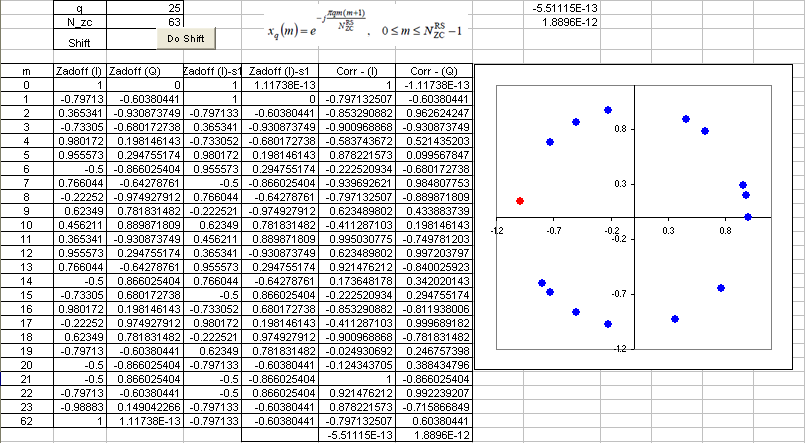

|
LTE Quick Reference Go Back To Index Home : www.sharetechnote.com |
|
|
As I briefly mentioned above, this is not a single number. It is a sequence of special numbers. You can find quite a lot of materials on this sequence from internet (try with Wikipedia).
Let's first think about how this sequence is generated. Various kinds of number sequences are used in many different kind of technologies (e.g, Walsh code in CDMA, OVSF code in WCDMA) and usually these numbers are created by a special rules or formula. Same to Zadoff-Chu sequence. The basic form of Zadoff chu sequence can be created by the formula as shown in the following spreadsheet (click on the picture to see in magnified view. Please click here if you want to have this spreadsheet).

Video Tutorial : http://www.youtube.com/watch?v=xCm_1bdVwlU
Why did we chose to use these sequence ? It is because this sequence has a couple of special properties that can be very useful for LTE low layer implementation.
Followings are the special properties of the sequence :
i) This sequence has a constant amplitude. If you look into the formula, it is in the form of e^(-j theta). You may learned about this in high school math. If you convert this into Euler form, you will get e^(-j theta) = cos(theta) - j sin(theta). First, you will see this is a complex number which is made up of real and imaginary part. If you plot the numbers onto a complex plan (Real part - horizontal axis and Imaginary part on vertical axis), all the numbers will lie on the perimeter of a circle. This means the amplitude of these number is constant. See the plot above. (Column B, C is one example of Zadoff Sequence. B is the real part and C is imaginary part. The plot is the scatter plot of column B, C)
ii) Zero Autocorrelation. If you create a sequence using this formula and create another sequence just by shifting the same sequence by N (N can be 1,2,....,size of sequence -1). And if you take the correlation of the two sequence, the result become 0. Taking the spreadsheet shown above as an example, Column B,C is a sequence created by formula. and Column D,E is not the one created by the formula.. it is just shifted version of Column B, C. Cell F70 and G70 shows the correlation of Column B,C and D,E which gives almost 0. It should be 0 theoretically, but the F70,G70 is not exactly 0 because of numerical errors.. but it is almost 0. If you have two sequence of number and the correlation of the two sequence is 0, we say "the two sequences are orthogonal to each other". It means that you can create many of orthogonal sequences just by shifting a Zadoff Chu sequence. How convenient it is to create orthogonal sequences.. and you know how important to create orthogonal sequences in many wireless communication.
Any sequences that has the two properties explained above are called CAZAC sequence (constant amplitude zero autocorrelation waveform).
iii) Cross correlation of two Zadoff Chu sequence is 1/Sqrt(Nzc). If you create two sequences using the formula shown on the spreadsheet just by changing 'q' (the q value used in both sequence should be prime numbers) and take the correlation of the two sequences, the result will be 1/Sqrt(Nzc).
There are a couple of more special properties of Zadoff Chu sequences, but I don't think they are important for LTE implementation. So I would leave it to you to refer to other sources.
Where in LTE we use this Zaddoff Chu sequence. In short, the sequence are used in the following part of LTE. (I will update the details of these topics later)
i) Primary Synchronization Signal (PSS) (so called primary synchronization channel) ii) random access preamble (PRACH) iii) PUCCH MDRS iv) PUSCH DMRS v) sounding reference signals(SRS).
|